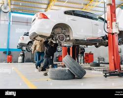
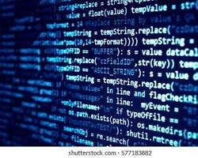
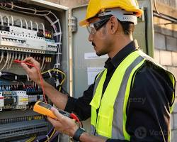

1. Técnico em Automação Industrial
Implementação e manutenção de equipamentos automatizados e sistemas robotizados para a indústria.
Implementação e manutenção de equipamentos automatizados e sistemas robotizados para a indústria.
Diagnóstico e reparo de sistemas mecânicos e eletrônicos de veículos leves e pesados.

Análise e programação de softwares para computadores e dispositivos móveis voltados à indústria.

Projetos de instalação e manutenção de sistemas elétricos prediais e industriais.

Planejamento e controle do transporte, armazenamento e distribuição de produtos de cadeias produtivas.
| Nome do Curso | Carga Horária | Modalidade | Eixo Tecnológico |
|---|---|---|---|
| Automação Industrial | 1.200h | Presencial | Controle e Processos |
| Manutenção Automotiva | 1.200h | Presencial | Controle e Processos |
| Desenvolvimento de Sistemas | 1.000h | Semipresencial | Informação e Comunicação |
| Eletrotécnica | 1.200h | Presencial | Controle e Processos |
| Logística | 800h | EAD | Gestão e Negócios |